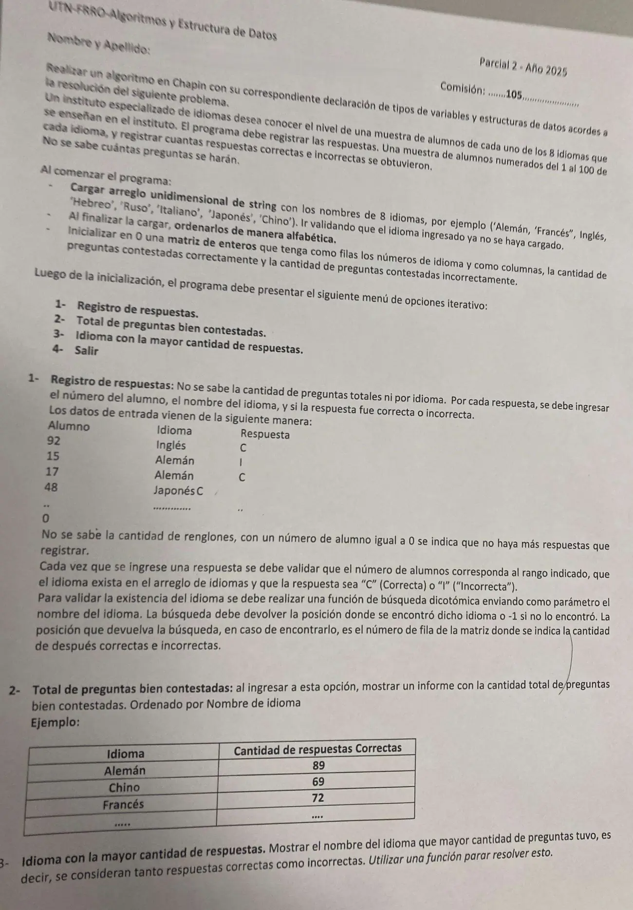

2° parcial, 22/08/2025 (Instituto de Idiomas)
2° parcial, 22/08/2025
Enunciado


Propuesta de respuesta
Respuesta no verificada. La propuso Luta Studios con inteligencia artificial y ningún docente la revisó. Puede tener errores.
La hoja pide el diagrama de Chapin. Va un diagrama por módulo, con su declaración de variables arriba, y primero el del programa principal. Si un diagrama no entra en la pantalla, tocalo para verlo completo. Después de los diagramas está el mismo algoritmo en Python, para que lo puedas probar.
Estructuras de datos
| Estructura | Qué guarda | Índices |
|---|---|---|
idiomas | Nombre de los 8 idiomas, ordenados después de cargarlos | 0 a 7 |
resp | Correctas (columna 0) e incorrectas (columna 1) de cada idioma | Fila 0 a 7, la posición del idioma en idiomas |
Programa principal y menú
Al comenzar el programa
1- Registro de respuestas
2- Total de preguntas bien contestadas
3- Idioma con la mayor cantidad de respuestas
El mismo algoritmo en Python
Es el programa que se probó, con las mismas sentencias y en el mismo orden que las cajas. Cada Leer del diagrama es un input, convertido a int o float según la declaración, y cada Mostrar es un print.
# Estructuras
# idiomas: arreglo [0..7] de str
# resp: matriz [0..7][0..1] de int (fila: idioma; columna 0: correctas, 1: incorrectas)
idiomas = [""]*8
resp = [[0]*2 for n in range(8)]
def YA_CARGADO(nom, cant):
# nom: str
# cant, i: int
i = 0
while i < cant and idiomas[i] != nom:
i = i + 1
return i < cant
def CARGA_IDIOMAS():
# i: int
# nom: str
for i in range(8):
nom = input("Idioma: ")
while YA_CARGADO(nom, i):
nom = input("Ya está cargado, ingrese otro: ")
idiomas[i] = nom
def ORDENAR():
# i, k: int
# aux: str
for i in range(7):
for k in range(i + 1, 8):
if idiomas[i] > idiomas[k]:
aux = idiomas[i]
idiomas[i] = idiomas[k]
idiomas[k] = aux
def INICIALIZAR():
# i, j: int
for i in range(8):
for j in range(2):
resp[i][j] = 0
def DICOTOMICA(nom):
# nom: str
# comienzo, fin, medio: int
comienzo = 0
fin = 7
medio = (comienzo + fin) // 2
while comienzo <= fin and idiomas[medio] != nom:
if nom < idiomas[medio]:
fin = medio - 1
else:
comienzo = medio + 1
medio = (comienzo + fin) // 2
if comienzo <= fin:
return medio
else:
return -1
def REGISTRO():
# alumno, pos: int
# nom, r: str
alumno = int(input("Alumno (1 a 100, 0 para terminar): "))
while alumno < 0 or alumno > 100:
alumno = int(input("Alumno inválido: "))
while alumno != 0:
nom = input("Idioma: ")
pos = DICOTOMICA(nom)
while pos == -1:
nom = input("Ese idioma no existe, ingrese otro: ")
pos = DICOTOMICA(nom)
r = input("Respuesta (C o I): ")
while r != "C" and r != "I":
r = input("Tiene que ser C o I: ")
if r == "C":
resp[pos][0] = resp[pos][0] + 1
else:
resp[pos][1] = resp[pos][1] + 1
alumno = int(input("Alumno (1 a 100, 0 para terminar): "))
while alumno < 0 or alumno > 100:
alumno = int(input("Alumno inválido: "))
def BIEN_CONTESTADAS():
# i, total: int
total = 0
print("Idioma - Correctas")
for i in range(8):
print(idiomas[i], "-", resp[i][0])
total = total + resp[i][0]
print("Total de bien contestadas:", total)
def MAYOR_RESPUESTAS():
# i, posMax: int
posMax = 0
for i in range(1, 8):
if resp[i][0] + resp[i][1] > resp[posMax][0] + resp[posMax][1]:
posMax = i
return posMax
# Programa principal
# opcion: int
CARGA_IDIOMAS()
ORDENAR()
INICIALIZAR()
opcion = 0
while opcion != 4:
print("1- Registro de respuestas")
print("2- Total de preguntas bien contestadas")
print("3- Idioma con la mayor cantidad de respuestas")
print("4- Salir")
opcion = int(input("Opción: "))
while opcion < 1 or opcion > 4:
opcion = int(input("Opción inválida: "))
match opcion:
case 1:
REGISTRO()
case 2:
BIEN_CONTESTADAS()
case 3:
print("Idioma con más respuestas:", idiomas[MAYOR_RESPUESTAS()])Respuesta no verificada. Puede tener errores.
Se armó con la hoja del examen y la página del 2° parcial (parámetros, arreglos, búsquedas, ordenamiento con arrastre y funciones que solo se invocan). Los arreglos se declaran como en las preguntas frecuentes de los TP 2024. El Chapin sigue la forma de las diapositivas del examen de Historia Clínica de 2019.
Quedó en duda: El orden alfabético compara letra por letra con el código de cada carácter. Si se mezclan mayúsculas, minúsculas o tildes al principio, el orden puede no ser el de un diccionario. Conviene cargar los nombres con la misma forma. Cuando el idioma no existe se vuelve a pedir solo el idioma. Si tu comisión prefiere descartar el renglón entero, cambia ese while. El número de alumno se valida de 1 a 100 y el 0 corta. No se guarda, porque ningún punto lo usa. La opción 2 muestra las correctas de cada idioma en el orden del arreglo, como el ejemplo de la hoja. Al final va el total. Las diapositivas de la materia no muestran en Chapin la lectura de datos ni la selección múltiple. Acá van como Leer y como Según, con una columna por caso.
¿Cómo te fue?
Marcá cada tema del examen.
- MatricesArreglos bidimensionales (matrices), en 2° parcial
- Búsqueda dicotómicaBúsqueda dicotómica, en 2° parcial
- OrdenamientoOrdenamiento, en 2° parcial